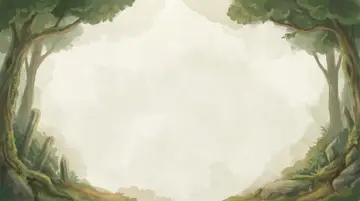
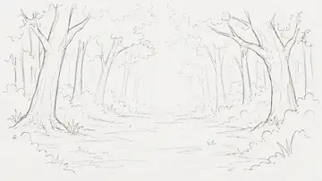
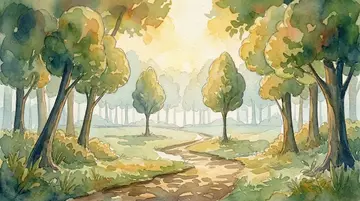

Nature Seed একটি পথ আঁকুন। দুজনকে এক করুন।
ব্রাউজারেই খেলা যায় এমন একটি বিনামূল্যের লাইন-এঁকে-সমাধানের ফিজিক্স পাজল। সীমিত কালিতে একটি লাইন আঁকলে সেটি র্যাম্প, সেতু বা ধরার জায়গা হয়ে Water Drop-কে Seed-এর কাছে পৌঁছে দেয়। প্রতিটি সমাধান করা লেভেল একটি জলরঙের বনের দৃশ্য ফিরিয়ে আনে।
2026 সালের 18 সেপ্টেম্বর প্রকাশিত, 100টি লেভেল, লাইন-দক্ষতার তারা আর সংরক্ষিত অগ্রগতি সহ। এটি itch.io, Game Jolt ও indiexpo-তে বিনামূল্যে; iOS আর Android সংস্করণ লক্ষ্য, তবে এখনও অ্যাপ স্টোরে আসেনি।
আঁকাসীমিত কালিতে আঁকুন
সংযোগ করুনWater Drop-কে Seed-এর কাছে পৌঁছে দিন
প্রস্ফুটিতবনকে ফিরিয়ে আনুন
বর্তমান বিল্ডের ভিতরে
আপনি যা আঁকেন, তা-ই হয়ে ওঠে লেভেলের অংশ।
আপনার চূড়ান্ত করা প্রতিটি স্ট্রোক সত্যিকারের সংঘর্ষসহ একটি শক্ত বস্তু হয়ে যায়, আর Water Drop ও Seed তাতে সাড়া দেয়। কালি আর লাইনের সংখ্যা দুটোই সীমিত, তাই লাইনের আকারটাই আসল।
রিলিজ স্ট্যাটাস প্রকাশিত হয়েছে 18 সেপ্টেম্বর 2026

গেম ওভারভিউ
দুটি ছোট্ট চরিত্রকে এক করার একটি আরামদায়ক লাইন-এঁকে-সমাধানের পাজল।
মূল ভাবনা
একটি পথ আঁকুন, Water Drop আর Seed-কে এক করুন এবং দেখুন শান্ত স্কেচটি আবার প্রাণ ফিরে পায়।
লঞ্চ বিল্ড
স্পর্শে আঁকার 100টি খেলার যোগ্য লেভেল, লাইন-দক্ষতার জন্য তারা, আর সেশনের মধ্যে সংরক্ষিত অগ্রগতি।
লক্ষ্য খেলোয়াড়
যারা শান্ত পাজল, হালকা ফিজিক্স, প্রকৃতির থিম আর চাপহীন মোবাইল সেশন পছন্দ করে।
স্ট্যাটাস
2026 সালের 18 সেপ্টেম্বর প্রকাশিত, ব্রাউজারে বিনামূল্যে খেলা যায়। মোবাইল সংস্করণ লক্ষ্য, তবে এখনও অ্যাপ স্টোরে আসেনি।
বৈশিষ্ট্য
Nature Seed-এ আপনি যা করেন।
লাইন-এঁকে-সমাধানের ফিজিক্যাল পথ
প্রতিটি পাজল শুরু হয় ভূখণ্ড, Seed আর Water Drop নিয়ে। খেলোয়াড়ের আঁকা স্ট্রোকটিই হয়ে ওঠে সেই র্যাম্প, সেতু বা ধরার জায়গা, যা তাদের এক করে।
স্পষ্ট ফিজিক্স ফিডব্যাক
Water Drop আর Seed এমনভাবে নড়ে, যা অনুসরণ করা যায়, তাই ব্যর্থ চেষ্টাও দেখিয়ে দেয় কী বদলাতে হবে।
বন পুনরুদ্ধার পুরস্কার
একটি লেভেল শেষ করলেই স্কেচের দৃশ্যটি রঙে ভরে ওঠে, আর গাছ বাড়তে থাকে।
ছোট লেভেল, স্পর্শে আঁকা
লেভেলগুলো ছোট আর আঁকতে হয় স্পর্শে, যা ফোনে অল্প সময়ের সেশনের জন্য মানানসই।
গেমপ্লে লুপ
Nature Seed খেলার নিয়ম
- ধাপ 01স্কেচ পড়ুন
ঢাল, ফাঁক আর বাধার দিকে নজর দিন, আর খুঁজে নিন দুই চরিত্রকে জুড়ে দেওয়ার সবচেয়ে নিরাপদ পথ।
- ধাপ 02রেখা আঁকুন
আপনার লাইনটি আঁকুন। স্ট্রোকটি চরিত্রদের জন্য র্যাম্প, পথনির্দেশক বা ধরার জায়গা হয়ে ওঠে।
- ধাপ 03নিশ্চিত করে পর্যবেক্ষণ করুন
লাইনটি চূড়ান্ত করুন আর চরিত্রদের প্রতিক্রিয়া দেখুন। কোনটা কাজ করল আর কোনটা করল না, তা স্পষ্ট দেখা যায়।
- ধাপ 04ফুল ফোটান বা আরও ভালো করুন
Water Drop যদি Seed-এর কাছে পৌঁছায়, বন ফিরে আসে। যদি ফসকে যায়, এইমাত্র যা শিখলেন তা কাজে লাগিয়ে আবার আঁকুন।
গল্প / জগৎ
জলের অপেক্ষায় আছে এক আঁকা বন।
Nature Seed শুরু হয়েছিল বস্তুকে ঠেলে এক করার বদলে ভঙ্গুর কিছু ফিরিয়ে আনা নিয়ে একটি লাইন-এঁকে-সমাধানের ফিজিক্স পাজল হিসেবে।
চরিত্রে আছে Seed, Water Drop আর একটি বন, যা খেলতে খেলতে স্কেচ থেকে রঙে ফিরে আসে। প্রতিটি পাজল একটি ছোট কাজ: ভূমি দেখে নিন, একটি পথ আঁকুন আর জলকে এমন কিছুর কাছে পৌঁছাতে সাহায্য করুন, যা বেড়ে উঠতে পারে।
- ডিজাইনের দিকনির্দেশ
- শান্ত ফিজিক্স আর চোখে দেখা পুনরুদ্ধার
- চরিত্র
- Water Drop আর Seed
- ইন্টারঅ্যাকশন
- স্পর্শে আঁকা
- আয়ত্তের পুরস্কার
- এক লাইনে সমাধান করলে তিনটি তারা মেলে
এক নজরে
আজ ব্রাউজারে বিনামূল্যে, আর লক্ষ্য মোবাইল।
আপনার হাতে সীমিত কালি আর সীমিত সংখ্যক লাইন থাকে। সেগুলো দিয়ে Water Drop-কে Seed-এর কাছে পৌঁছে দিন, তারপর লেভেলটি আবার খেলে আপনার সমাধান এক লাইনে নামিয়ে আনুন, আর পান তিন তারা।
- জেনার
- লাইন-এঁকে-সমাধানের ফিজিক্স পাজল
- লক্ষ্য প্ল্যাটফর্ম
- iOS / Android
- খেলার সেশনের ধরন
- ছোট শান্ত লেভেল
অ্যাসেট ডাউনলোড করুন
Nature Seed প্রেস ও ক্রিয়েটর অ্যাসেট
প্রেস কভারেজ, পাবলিশার রিভিউ আর স্টোর পেজের রেফারেন্সের জন্য WebP প্রিভিউ। অনুরোধ করলে পূর্ণ রেজোলিউশনের সোর্স ফাইল পাওয়া যায়।
ব্র্যান্ড ও চরিত্র
 Water Dropনীল চরিত্রটি, যাকে Seed-এর কাছে পৌঁছাতে হবে।
Water Dropনীল চরিত্রটি, যাকে Seed-এর কাছে পৌঁছাতে হবে।
 Seed চরিত্রসবুজ চরিত্রটি, যার কাছে Water Drop পৌঁছাতে চায়।
Seed চরিত্রসবুজ চরিত্রটি, যার কাছে Water Drop পৌঁছাতে চায়।
 গাছের বৃদ্ধিসমাধানের পর যে গাছটি বেড়ে ওঠে।
গাছের বৃদ্ধিসমাধানের পর যে গাছটি বেড়ে ওঠে।


বন মেনুমূল মেনুর পটভূমি। গেমপ্লে ব্যাকগ্রাউন্ডখেলার জায়গা ফাঁকা রাখা লেভেলের পটভূমি।
গেমপ্লে ব্যাকগ্রাউন্ডখেলার জায়গা ফাঁকা রাখা লেভেলের পটভূমি।
লাইন-এঁকে-সমাধানের স্কেচ লেভেল
 স্কেচ লেভেল 01সমাধানের আগের স্কেচ।
স্কেচ লেভেল 01সমাধানের আগের স্কেচ।
 স্কেচ লেভেল 02সমাধানের আগের স্কেচ।
স্কেচ লেভেল 02সমাধানের আগের স্কেচ।


স্কেচ লেভেল 03সমাধানের আগের স্কেচ। স্কেচ লেভেল 04সমাধানের আগের স্কেচ।
স্কেচ লেভেল 04সমাধানের আগের স্কেচ।
 স্কেচ লেভেল 05সমাধানের আগের স্কেচ।
স্কেচ লেভেল 05সমাধানের আগের স্কেচ।
 স্কেচ লেভেল 06সমাধানের আগের স্কেচ।
স্কেচ লেভেল 06সমাধানের আগের স্কেচ।
 স্কেচ লেভেল 07সমাধানের আগের স্কেচ।
স্কেচ লেভেল 07সমাধানের আগের স্কেচ।
 স্কেচ লেভেল 08সমাধানের আগের স্কেচ।
স্কেচ লেভেল 08সমাধানের আগের স্কেচ।
 স্কেচ লেভেল 09সমাধানের আগের স্কেচ।
স্কেচ লেভেল 09সমাধানের আগের স্কেচ।
 স্কেচ লেভেল 10সমাধানের আগের স্কেচ।
স্কেচ লেভেল 10সমাধানের আগের স্কেচ।
পুনরুদ্ধার করা পাজলের দৃশ্য
 পুনরুদ্ধার করা লেভেল 01সমাধানের পর ফিরে আসা রূপ।
পুনরুদ্ধার করা লেভেল 01সমাধানের পর ফিরে আসা রূপ।
 পুনরুদ্ধার করা লেভেল 02সমাধানের পর ফিরে আসা রূপ।
পুনরুদ্ধার করা লেভেল 02সমাধানের পর ফিরে আসা রূপ।
 পুনরুদ্ধার করা লেভেল 03সমাধানের পর ফিরে আসা রূপ।
পুনরুদ্ধার করা লেভেল 03সমাধানের পর ফিরে আসা রূপ।
 পুনরুদ্ধার করা লেভেল 04সমাধানের পর ফিরে আসা রূপ।
পুনরুদ্ধার করা লেভেল 04সমাধানের পর ফিরে আসা রূপ।
 পুনরুদ্ধার করা লেভেল 05সমাধানের পর ফিরে আসা রূপ।
পুনরুদ্ধার করা লেভেল 05সমাধানের পর ফিরে আসা রূপ।
 পুনরুদ্ধার করা লেভেল 06সমাধানের পর ফিরে আসা রূপ।
পুনরুদ্ধার করা লেভেল 06সমাধানের পর ফিরে আসা রূপ।
 পুনরুদ্ধার করা লেভেল 07সমাধানের পর ফিরে আসা রূপ।
পুনরুদ্ধার করা লেভেল 07সমাধানের পর ফিরে আসা রূপ।
 পুনরুদ্ধার করা লেভেল 08সমাধানের পর ফিরে আসা রূপ।
পুনরুদ্ধার করা লেভেল 08সমাধানের পর ফিরে আসা রূপ।
 পুনরুদ্ধার করা লেভেল 09সমাধানের পর ফিরে আসা রূপ।
পুনরুদ্ধার করা লেভেল 09সমাধানের পর ফিরে আসা রূপ।


পুনরুদ্ধার করা লেভেল 10সমাধানের পর ফিরে আসা রূপ।উন্নয়নের সময়রেখা
Nature Seed-এর উন্নয়নের সময়রেখা
- গ্রীষ্ম 2025মূল ধারণা
Nature Seed শুরু হয়েছিল সংযোগ আর প্রকৃতিকে ফিরিয়ে আনা নিয়ে একটি শান্ত মোবাইল পাজলের আইডিয়া হিসেবে।
- অক্টোবর 2025Seed ও Water Drop-এর চরিত্র নির্ধারণ
আমরা ডিজাইন ডকুমেন্ট শেষ করলাম এবং Seed আর Water Drop-কে প্রধান চরিত্র হিসেবে ঠিক করলাম।
- ডিসেম্বর 2025উন্নয়ন শুরু হয়
আমরা কাগজে প্রথম লেভেলগুলোর পরিকল্পনা করলাম, তারপর বানাতে শুরু করলাম, আর মূল সিস্টেমগুলো খেলার যোগ্য হয়ে উঠল।
- ফেব্রুয়ারি 2026বড় আকারের লেভেল খসড়া
সব লেভেলের একটা বড় খসড়া আমাদের হাতে এল, যা পরে পালিশ ও ব্যালান্সিংয়ের ভিত্তি হলো।
- মার্চ-এপ্রিল 2026মেকানিক্স এবং লেভেল পর্যালোচনা
আমরা বাড়তি মেকানিক্স আর খসড়া লেভেল পর্যালোচনা করলাম, তারপর গেমটিকে শান্ত রাখতে সেগুলো সহজ করলাম বা নতুন করে সাজালাম।
- জুলাই 2026ভার্টিক্যাল প্রোটোটাইপ পর্ব
জুলাইয়ের বিল্ডে সীমিত কালিতে আঁকা, দক্ষতার তারা, সংরক্ষিত অগ্রগতি আর স্থিতিশীল লাইন জেনারেশন এক খেলার যোগ্য লুপে এল।
- 18 সেপ্টেম্বর 2026Nature Seed প্রকাশ
গেমটি প্রকাশিত হয় Nature Seed নামে, 100টি লেভেল, লাইন-দক্ষতার তারা, সংরক্ষিত অগ্রগতি আর জলরঙের পুনরুদ্ধারের দৃশ্য নিয়ে।
Nature Seed FAQ
Nature Seed নিয়ে সাধারণ প্রশ্ন
Nature Seed কি বিনামূল্যে?
হ্যাঁ। আপনি এটি itch.io, Game Jolt ও indiexpo-তে ব্রাউজারে বিনামূল্যে খেলতে পারেন।
Nature Seed কি এখনই পাওয়া যাচ্ছে?
হ্যাঁ। এটি 2026 সালের 18 সেপ্টেম্বর 100টি লেভেল নিয়ে প্রকাশিত হয়েছে। iOS আর Android সংস্করণ লক্ষ্য প্ল্যাটফর্ম, তবে এখনও অ্যাপ স্টোরে আসেনি।
Nature Seed কী ধরনের গেম?
একটি আরামদায়ক লাইন-এঁকে-সমাধানের ফিজিক্স পাজল। আপনার আঁকা লাইনগুলো শক্ত বস্তু হয়ে Water Drop আর Seed-এর দেখা হতে সাহায্য করে।
Nature Seed কীভাবে খেলতে হয়?
ভূখণ্ড দেখে নিন, সীমিত কালিতে একটি পথ আঁকুন, তারপর দেখুন দুই চরিত্র কীভাবে সাড়া দেয়। ফসকে গেলে আবার আঁকুন। কম লাইনে বেশি তারা মেলে, আর এক লাইনে মেলে তিন তারা।
Nature Seed কারা বানায়?
WillowinWorlds, মোবাইলের পাজল ও আর্কেড গেম বানানো একটি স্বাধীন স্টুডিও।
আমি কি Nature Seed-এর প্রেস অ্যাসেট ব্যবহার করতে পারি?
হ্যাঁ, প্রেস, পাবলিশার রিভিউ আর স্টোরের রেফারেন্সের জন্য। সোর্স ফাইল আপনি না চাইলে প্রাইভেট থাকে।
Nature Seed ডেভলগ
কী বদলেছে আর কখন
- Nature Seed প্রকাশ
Nature Seed চূড়ান্ত নাম নিয়ে itch.io, Game Jolt আর indiexpo-তে একটি বিনামূল্যের ব্রাউজার গেম হিসেবে চালু হয়েছে, 100টি লেভেল, লাইন-দক্ষতার তারা ও সংরক্ষিত অগ্রগতি সহ।
- লেভেল 2 পুনরুদ্ধার ও স্থিতিশীলতা পরিমার্জন
লেভেল 2-এ এখন প্রোডাকশন ব্যাকগ্রাউন্ডের জোড়া ব্যবহার করা হয়েছে, সঙ্গে আছে আরও নির্ভরযোগ্য লেভেল সেটআপ, কলিশন যাচাই ও সমাপ্তির ফিডব্যাক।
- জুলাই 2026খেলার যোগ্য বিল্ড
জুলাইয়ের বিল্ডে সীমিত কালিতে লাইন আঁকা, দক্ষতার তারা, সংরক্ষিত অগ্রগতি আর পুনরুদ্ধারের ফিডব্যাক একসঙ্গে যুক্ত হলো।
- এপ্রিল 2026লেভেল নতুন করে সাজানো
অভ্যন্তরীণ পর্যালোচনার পর আমরা কয়েকটি খসড়া লেভেল নতুন করে সাজিয়েছি, যাতে জটিলতা কমে এবং ফোনে পড়তে সুবিধা হয়।
- মার্চ 2026মেকানিক্স পর্যালোচনা
আমরা বাড়তি মেকানিক্স পরীক্ষা করলাম আর যেগুলোর কারণে লেভেল ঠাসাঠাসি লাগছিল, সেগুলো বাদ দিলাম।
- ফেব্রুয়ারি 2026বড় আকারের লেভেল খসড়া
সব লেভেলের একটা বড় খসড়া তৈরি হলো, যা পরে পালিশ ও ব্যালান্সিংয়ের ভিত্তি হয়ে ওঠে।
- ডিসেম্বর 2025উন্নয়ন শুরু হয়
মূল সিস্টেমগুলো ডিজাইন ডকুমেন্ট থেকে বেরিয়ে খেলার যোগ্য রূপ পেল।
- গ্রীষ্ম 2025মূল ধারণা
Nature Seed-এর প্রথম সংস্করণ ছিল সংযোগ আর প্রকৃতিকে ফিরিয়ে আনা নিয়ে একটি শান্ত পাজলের আইডিয়া।